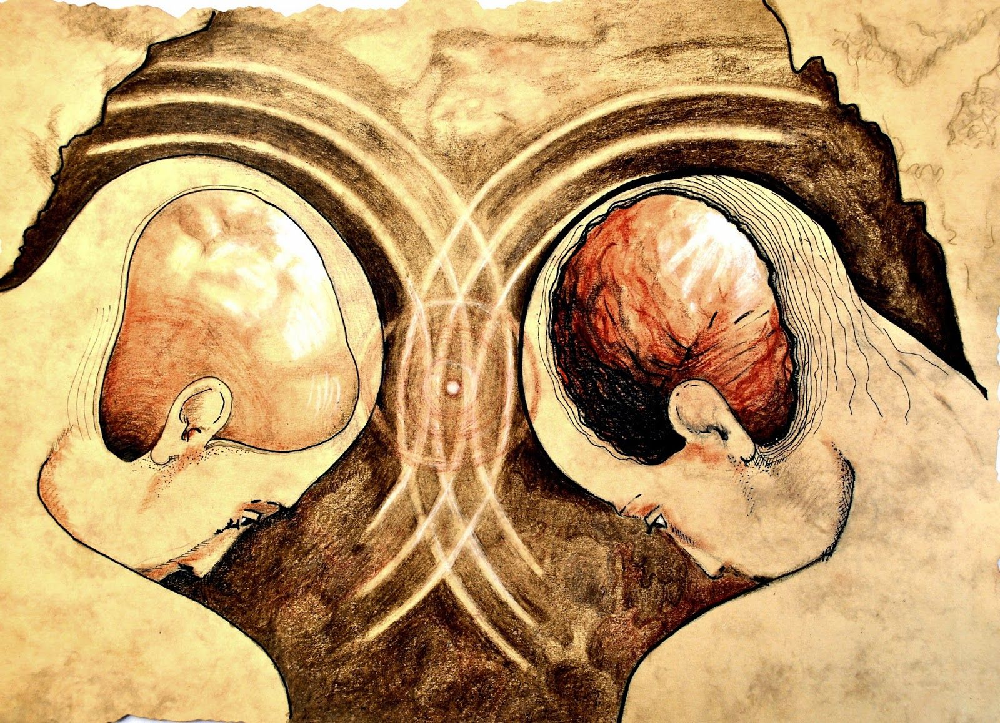

La filosofía es un conjunto de razonamientos lógicos y metódicos sobre conceptos abstractos que tratan de explicar
las causas y fines de la verdad, la realidad, las experiencias y nuestra existencia. La palabra filosofía deriva del
griego φιλοσοφία y del latín philosophia, que al parecer fue acuñada por Pitágoras en la Antigua Grecia, y significa
"amor por la sabiduría" o "amigo de la sabiduría".
La filosofía se caracteriza por abarcar diversas áreas de estudio, enfatizar el pensamiento crítico, buscar respuestas lógicas
a diversas preguntas y no aceptar verdades absolutas. A partir de la filosofía han surgido innumerables conocimientos de
carácter humanista y científico. Entre estos destacan sus principales ramas de estudio como la metafísica, la epistemología
o la lógica.
Es universal, se preocupa por construir un pensamiento común, valiéndose de diversos conocimientos, para que todas las personas
puedan entender la realidad en la que viven. No es absoluta, acepta la crítica y discusión de los argumentos seleccionados
para acercarse a la verdad de todas las cosas. Incentiva el saber crítico, en la búsqueda de la verdad, se replantea y vuelve
a analizar las bases y los argumentos de los conocimientos existentes. Es metódica, otorga gran importancia a la metodología
a aplicar cuando se realiza un razonamiento lógico en la búsqueda del conocimiento. Es sistemática, organiza de forma lógica
y coherente los conocimientos o verdades que se tienen sobre un tema en particular.
